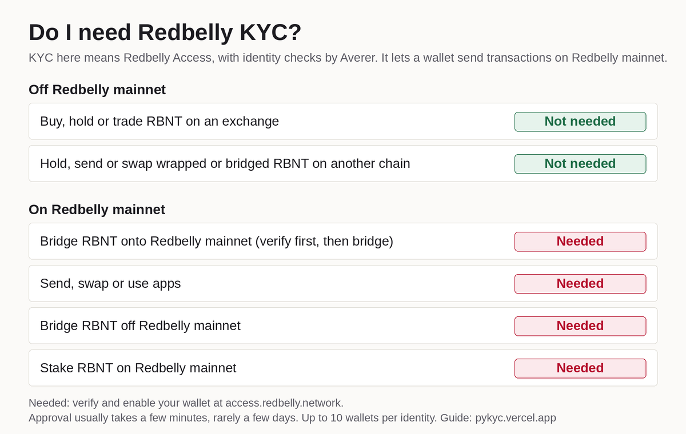

Two regional rules. Keep them apart.
Redbelly Community DAO
Open to general members from every region
The DAO vote that removed regional limits for general members closed on 5 July 2026.S10 Limits still apply to High Council Members and General DAO Leadership.
Redbelly Network
Not offered in 18 jurisdictions
Clause 15.1 of the terms lists them. Clause 15.2 says people located in, or tax resident in, those places may not use the website, platform or tools.S11 The DAO vote did not change this. See question 4.
Part A
Do I need KYC?
"KYC" here means Redbelly Access, with the identity check done by Averer. It lets a wallet send transactions on Redbelly mainnet. Find what you want to do. The answer is in the middle column.
| I want to | Redbelly KYC | Why |
|---|---|---|
| Off Redbelly mainnet | ||
| Buy, hold or trade RBNT on an exchangeFor example Gate or MEXC | Not needed | Your coins sit in your exchange account, not in a Redbelly mainnet wallet. The exchange's own account rules apply.S6 |
| Hold, send or swap RBNT on another chainBridged RBNT or wRBNT on Ethereum, Base, BNB Chain, Polygon, Arbitrum, Avalanche and others | Not needed | That token lives on the other chain. Redbelly KYC only controls accounts on Redbelly Network.S1S7S8 |
| On Redbelly mainnet | ||
| Bridge RBNT onto Redbelly mainnet | Needed | Once the coins arrive, every transaction you make with them needs an enabled wallet. Verify and enable first, then bridge.S1S9 |
| Send, swap or use apps | Needed | Every account must claim an access credential and be enabled before it can write to the network.S1S2 |
| Bridge RBNT off Redbelly mainnet | Needed | The bridge starts with a transaction sent from your Redbelly wallet.S1S8 |
| Stake RBNT on Redbelly mainnet | Needed | Staking is a deposit call on the mainnet staking contract, so the wallet must be enabled.S12S1 |
| Vote in the Redbelly DAO | Needed | The governance site says "Complete KYC to participate in DAO voting" and checks for a verified, enabled wallet.S15 |
Needed verify and enable your wallet first. Not needed no Redbelly KYC involved. Staking through an exchange follows that exchange's rules.
No official page says whether a bridge can deliver RBNT to a Redbelly wallet that is not enabled yet. The answer above does not change, because you need an enabled wallet to move the coins once they arrive.
Native or bridged: the one line test
Native RBNT lives on Redbelly mainnet (chain ID 151). Bridged RBNT and wRBNT are tokens on other chains.S14S7 If you never send a transaction on Redbelly mainnet, you do not need Redbelly KYC.

Part B
The five common questions
1. When do I need KYC, and when don't I?
You need it for anything on Redbelly mainnet: sending, swapping, bridging in or out, staking and DAO voting. You do not need it to hold RBNT on an exchange or bridged RBNT on another chain.
Before a wallet can write to the network, its owner claims an access credential from an accredited issuer and then enables the wallet.S1S3 Averer is the issuer behind Redbelly Access.E5 DAO voting also needs a verified, enabled wallet, and eligibility is fixed at each proposal's snapshot, so verifying now may not qualify you for a vote already running.S15 The Part A table covers each case.
2. How many wallets can I add to one KYC?
Up to 10 wallets per verified identity. At 10 the portal shows "Account allocation exhausted." and stops you adding more.
After your first wallet is enabled, Redbelly Access offers Add another account and Link another wallet, so more wallets join the same verified identity with no new check.E4E5 The portal's own code checks for 10 linked accounts and then shows "Account allocation exhausted." in place of the add option.E1 You are accountable for everything a linked wallet does on the network, so only link wallets you control.E4
3. How long does KYC approval take?
Usually a few minutes, in rare cases a few days. That is the portal's own wording while you wait.
The pending screen says: "This could take a few minutes but in some (rare) cases it could take a few days. Please check again soon."E2 It is an estimate, not a promise. The portal's code has no fixed deadline beyond this. The one fixed number is the refresh: after you press Check verification status the portal waits 30 seconds before it asks Averer again, so press it once and wait.E2 What to do depends on the screen you see:
| Screen title | What it means | What to do |
|---|---|---|
| Identity verification pending | Averer is still checking. | Press Check verification status once and wait 30 seconds. Still pending after a few days: open an Averer ticket. |
| Identity verification incomplete | Averer "is not yet able to verify your identity". You may need to resubmit some information. | Press Retry identity verification and resubmit. |
| Identity verification failed | Averer "was not able to verify your identity". | Open an Averer ticket. |
| "It seems you haven't received the RBNT yet" | You are approved. The RBNT that pays for enabling has not arrived. | Wait a few minutes and press RETRY. |
Wording copied from the portal.E2E3
4. Can I join from my country?
The DAO: yes, from any region, as a general member. Redbelly Network: not if you are in, or a tax resident of, one of the 18 jurisdictions in clause 15.1.
Redbelly Community DAO
The Snapshot vote "DAO Proposal: Increase Governance Accessibility and Protect Contributor Privacy" ran from 30 June to 5 July 2026 and passed.S10
- For
- 8,514,893
- Against
- 5,983,785
- Abstain
- 1,340,338
It removed regional restrictions for General DAO Members and kept them for High Council Members and General DAO Leadership.S10 The same vote removed a voting whitelist. It did not remove KYC for voting.S15
Redbelly Network
Clause 15.1 lists the places where Redbelly does not offer services. Clause 15.2 says tax residents of, or people located in, those places "are not allowed to access or use our website, platform, and our software suite and tools".S11 Redbelly Access is part of that platform.
- Afghanistan
- Central African Republic
- North Korea
- DR Congo
- Guinea-Bissau*
- Iran
- Iraq
- Lebanon
- Libya
- Myanmar
- Russia
- Somalia
- South Sudan
- Sudan
- Syria
- Ukraine
- Yemen
- Zimbabwe
*The terms spell it "Guinea-Bussau". North Korea appears as "Democratic People's Republic of Korea".
The DAO vote changed the DAO's own membership rule. It did not change Redbelly Network's terms.
5. Do I need KYC to stake?
Yes, to stake on Redbelly mainnet. Staking on an exchange follows that exchange's rules.
Staking means calling deposit on the StakingEscrowUpgradable contract on mainnet, and nodes stake 100,000 RBNT.S12 Node operators "MUST have network access for 2 accounts".S13 Every write to Redbelly needs an enabled wallet.S1 For a third-party staking app, no official page says, so ask the app.
Part C
Get verified and enable a wallet
You do this once, at access.redbelly.network. Redbelly Access is the official portalS5 and Averer is the accredited issuer that checks your identity. The flow covers wallet connection, the KYC check and on-chain permission.S4 Button names are written exactly as the portal shows them.E3
Before you start
- MetaMask or Coinbase Wallet. These are the wallets the portal names.E5
- A valid passport. The check uses a photo ID with biometric verification.S1
- The address you want to use. The account you connect becomes your public address on Redbelly Network.E3
- No fee. The issuer covers the fees for network access and sends the RBNT that pays for enabling.E5E3
- Check your country. People in the 18 clause 15.1 jurisdictions may not use the platform.S11
Steps
- Open the portal and connectGo to access.redbelly.network, press Connect wallet and approve in your wallet.E3
- If the wallet will not connect, add the network by handPress ADD NETWORK MANUALLY, or enter these details in your wallet:S14
- Network name
- Redbelly Network Mainnet
- RPC URL
- https://governors.mainnet.redbelly.network
- Chain ID
- 151
- Currency symbol
- RBNT
- Block explorer
- https://redbelly.routescan.io/
- Start verificationOn the "Get access credential" screen press Begin identity verification.E3
- Read the notice and continue to AvererThe portal says Averer manages the check and your documents are not stored on Redbelly Network. Tick I understand, then press Continue with Averer.E3
- Sign the request in your walletYour wallet asks you to let the accredited issuer access your public address. Sign it.E3
- Complete the check with AvererA window titled "Interacting with averer.co" opens. Submit your passport and finish the biometric check there.S1E3
- Wait for approvalThe screen shows "Identity verification pending". Usually a few minutes, in rare cases a few days. Press Check verification status to refresh. The portal takes 30 seconds to re-check.E2
- Enable your accountAfter approval the account shows "Account status: Not enabled". Press Enable account and sign the transaction. If you see "It seems you haven't received the RBNT yet", wait a few minutes and press RETRY.E3
- Check it workedThe account shows "Account status: Enabled" and the portal shows "Next steps". This wallet can now send, bridge, stake and vote on Redbelly mainnet.E3
Add another wallet to your verified identity
You do not verify again. Open the portal with a wallet that is already enabled and go to the Accounts section. Up to 10 wallets in total.E1
Same wallet app, other address
Press Add another account. In your wallet, switch this site's connection to the address you want to add, then sign.E4
A different wallet app
Press Link another wallet. Connect the other wallet with the wallet button in the top right corner of the portal, then sign.E4
Then press Enable account for the new wallet, as in step 8. If the portal says the account "must first be funded with at least" a stated amount of RBNT, send that much from one of your enabled wallets and try again.E3 After your first account is enabled the portal also offers a Testnet account.E5
This guide has no portal screenshots because the flow shows a real ID check and personal data.
Part D
When something goes wrong
The portal splits help in two. Problems with your identity check go to Averer. Connection or account errors go to Redbelly Support.E5
Approval is taking too long
- Make sure you are on access.redbelly.network with the wallet you verified with.
- Press Check verification status once and wait 30 seconds for the re-check.
- Most checks take a few minutes and rare ones a few days.E2 Still "Identity verification pending" after a few days: open an Averer ticket.
Verification was rejected or is incomplete
"Incomplete" means resubmit with Retry identity verification. "Failed" means contact Averer. The portal's CONTACT AVERER link goes to averer.co, and Averer's tickets are handled at the help portal below.E2S19 No official page lists the reasons a check can fail, so do not guess one.
I reached the wallet limit
At 10 linked accounts the portal shows "Account allocation exhausted." and the add option goes away.E1 No official page describes a way past 10, so use one of the 10 you have. If you see "The address you're trying to add is attached to another account.", that address is already linked to another identity and cannot join yours.E4
The wallet will not connect or the account will not enable
Add the network by hand as in Part C step 2. If you see "It seems you haven't received the RBNT yet", wait a few minutes and press RETRY.E3 If it still fails, go to Redbelly Support, which points to the Redbelly Discord for help.S16
How to open a support ticket with Averer
- Open the ticket formGo straight to averer-help.freshdesk.com/support/tickets/new, or open the Averer help portal and press Submit a ticket.S18S17
- Fill in every fieldThe form has Full Name, Email Address, Subject, What is your issue? and Redbelly Wallet Address (Required). All five are mandatory. Attach files is optional.S18
- Say exactly what the screen showsUse the public address you verified with in Redbelly Access, and copy the screen title, for example "Identity verification failed", and when you started.
- Press SubmitCheck the wallet address first. A wrong address makes your ticket hard to match to your check.
Short version
Pin version for Discord or Telegram
Post this text with decision-guide.png. It uses the same wording as questions 2, 3 and 4. The text is also in pin.txt.

Do I need KYC on Redbelly? (decision guide image attached) NOT NEEDED: buying, holding or trading RBNT on an exchange, or holding bridged RBNT on another chain. NEEDED: anything on Redbelly mainnet. Send, swap, use apps, bridge in or out, stake, vote in the DAO. Get verified at https://access.redbelly.network Connect wallet, Begin identity verification, I understand, Continue with Averer. After approval press Enable account. You need MetaMask or Coinbase Wallet and a passport. No fee: the issuer covers it. Approval: usually a few minutes, in rare cases a few days. That is the portal's own wording while you wait. Press Check verification status once, it re-checks after 30 seconds. Still pending after a few days, or "Identity verification failed": open an Averer ticket at https://averer-help.freshdesk.com/support/tickets/new Wallets: up to 10 wallets per verified identity. At 10 the portal shows "Account allocation exhausted." and stops you adding more. Regions: two separate rules. The DAO is open to general members from every region (Snapshot vote closed 5 July 2026: https://snapshot.box/#/s:rbnt.eth/proposal/0xa57ccc9a6d554c9e5a1b1ca429ad2affc2e9058f12ea50bce999460f2aea4e02). Redbelly Network still does not offer services in the 18 jurisdictions in clause 15.1 of its terms. Never share your seed phrase, private key or ID photos. Full guide and sources: https://pykyc.vercel.app/ Last verified 22 October 2026
Sources
Where every fact comes from
All checked on 22 October 2026. S numbers are pages. E numbers are the Redbelly Access portal's own text, with file names, SHA-256 hashes and search strings on the evidence page. Saved copies of the other sources are listed at the end of that page.
- S1vine.redbelly.network/identity/user-access/OFFICIALEach user claims an access credential from an accredited issuer, then self enables the account. Needs a passport verified with biometric checks.
- S2vine.redbelly.network/identity/OFFICIALAll network participants must prove who they are before gaining access.
- S3vine.redbelly.network/identity/accredited-issuers/OFFICIALAccredited issuers onboard users. Minimum requirement is a valid photo ID with biometric verification.
- S4docs.redbelly.network, IndividualOnboardingSDK overviewOFFICIALOnboarding covers wallet authentication, KYC verification and on-chain permission setup.
- S5access.redbelly.networkPORTALThe official verification portal. Its on-screen text is quoted as E1 to E5.
- S6vine.redbelly.network/native-currency/OFFICIALRBNT is the native coin. Lists Gate and MEXC, and Lucid Labs for bringing RBNT to Redbelly.
- S7vine.redbelly.network/bridged-tokens/layerzero/OFFICIALBridged RBNT addresses on Polygon, Ethereum, BSC, Arbitrum, Base, Avalanche and other chains.
- S8vine.redbelly.network/bridged-tokens/celer/OFFICIALwRBNT on Ethereum and BNB Chain. RBNT bridges out from Redbelly, not back.
- S9vine.redbelly.network/bridged-tokens/lucidlabs/OFFICIALLucid Labs bridges tokens between Redbelly and other chains in both directions.
- S10Snapshot, rbnt.eth: DAO Proposal: Increase Governance Accessibility and Protect Contributor PrivacyDAO VOTEClosed 5 July 2026, 10:42 UTC. For 8,514,893, Against 5,983,785, Abstain 1,340,338. Removes regional restrictions for General DAO Members, keeps them for High Council Members and General DAO Leadership. Mirror: DAO governance site. Saved result: snapshot-proposal.json.
- S11redbelly.network/terms-and-conditionsOFFICIALClause 15.1: the 18 jurisdictions. Clause 15.2: tax residents of, or people located in, them may not use the website, platform or tools. Saved: terms-clause-15.txt.
- S12vine.redbelly.network/nodes/staking/OFFICIALNodes stake 100,000 RBNT by calling deposit on the StakingEscrowUpgradable contract.
- S13vine.redbelly.network/nodes/become-operator/OFFICIAL"Node operators MUST have network access for 2 accounts."
- S14vine.redbelly.network/environments/OFFICIALMainnet network name, RPC URL, chain ID 151, RBNT and block explorer.
- S15redbelly-governance.vercel.appDAO"Complete KYC to participate in DAO voting." Eligibility is set at each proposal's snapshot. Saved: governance-kyc-notice.md.
- S16vine.redbelly.network/support/OFFICIALRedbelly Support, linked from the portal for connection and account errors. Points to the Redbelly Discord.
- S17averer-help.freshdesk.com/support/homeOFFICIALAverer help portal with the "Submit a ticket" button. Its knowledge base had no articles on 22 October 2026.
- S18averer-help.freshdesk.com/support/tickets/newOFFICIALAverer ticket form. Fields: Full Name, Email Address, Subject, What is your issue?, Redbelly Wallet Address (Required), Attach files. Saved: averer-ticket-form.json.
- S19averer.coOFFICIALAverer's website. The portal's "contact Averer" and CONTACT AVERER links go here.
- E1Accounts screen: wallet limitPORTAL
L.length>=Number("10")then "Account allocation exhausted." - E2Verification status messagesPORTALPending, incomplete and failed wording, the buttons on each screen, and the 30 second re-check behind Check verification status.
- E3Screens and buttons, start to "Enabled"PORTALConnect wallet, Begin identity verification, Continue with Averer, Enable account, RETRY.
- E4Adding walletsPORTALAdd another account, Link another wallet, the accountability notice and the "attached to another account" error.
- E5"Having trouble?" FAQPORTALNo fee, MetaMask and Coinbase Wallet, more accounts, Testnet account, Averer as issuer, and the Averer or Redbelly Support split.